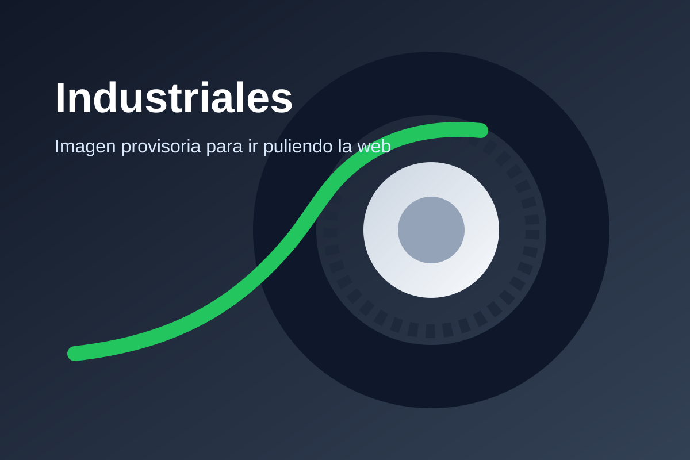

Cubiertas para autoelevadores, equipos industriales y necesidades de planta o depósito.
Consultar por WhatsApp
Esta página quedó lista como base comercial. Más adelante podemos sumar marcas, medidas, fichas técnicas y productos reales.
Atención rápida, enfoque técnico y respuesta comercial directa para ayudarte a elegir la mejor cubierta según el uso.